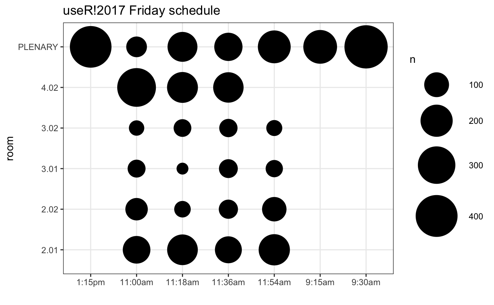
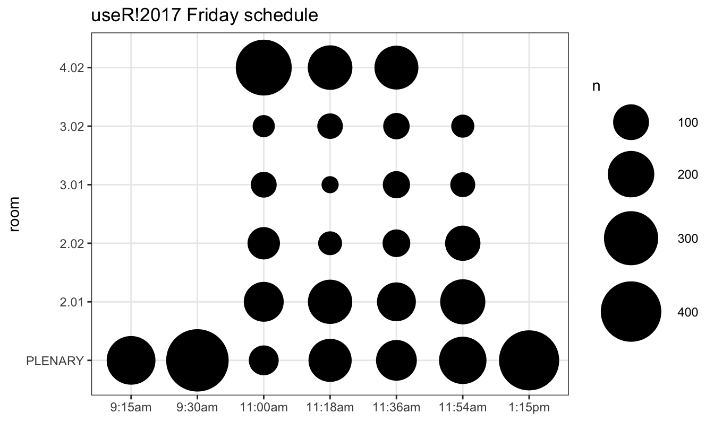
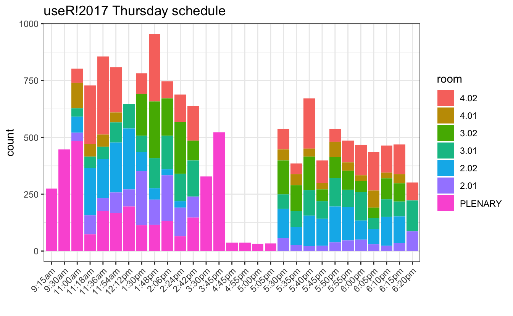

This code has been lightly revised to make sure it works as of 2018-12-16.
After attending useR!2017 for the first time, which great pleasure and new connections made. I decided to see if I could extract some of the information available in the public schedule. So as with my last post, I’ll do a bit of scraping followed by a few visualizations.
Packages
library(tidyverse)
library(utils)
library(plotly)
library(ltm)
require(visNetwork)Web scraping
I found this task easiest with the help of purrr:map(). First, we find the full schedules at the following links
https://user2017.sched.com/2017-07-04/overview (Tuesday)
https://user2017.sched.com/2017-07-05/overview (Wednesday)
https://user2017.sched.com/2017-07-06/overview (Thursday)
https://user2017.sched.com/2017-07-07/overview (Friday)
then we read the entire page into a tibble along with a day variable.
day <- c("Tuesday", "Wednesday", "Thursday", "Friday")
link <- paste0("https://user2017.sched.com/2017-07-0", 4:7, "/overview", sep = "")
event0 <- map2_df(link, day,
~ tibble(text = readLines(.x),
day = .y))then with the help of stringr we extract the desired information from the document, following the idiom that “multiple simple regex is better than one complicated one.” I also filtered out most non-talk events.
events <- event0 %>%
filter(str_detect(text, "<span class='") | str_detect(text, "</h3>"),
!str_detect(text, "REGISTRATION"),
!str_detect(text, "COFFEE BREAK"),
!str_detect(text, "LUNCH"),
!str_detect(text, "WELCOME"),
!str_detect(text, "Poster"),
!str_detect(text, "RIOT SESSION"),
!str_detect(text, "Buses"),
!str_detect(text, "Dinner"),
!str_detect(text, "CLOSING")) %>%
mutate(time = str_extract(text, "<h3>.{1,7}"), # time
time = str_replace(time, "<h3> *", ""),
id = str_extract(text, "id='\\S{32}"), # id
id = str_replace(id, "id='", ""),
name = str_extract(text, str_c(id, ".*")), # name
name = str_replace(name, str_c(id, "'>"), ""),
name = str_extract(name, "^.*(?=( <span))"),
room = str_extract(text, 'vs">(.*?)<'),
room = str_replace(room, 'vs">', ""),
room = str_replace(room, '<',"")) %>% # room
fill(time) %>%
filter(!str_detect(text, "<h3>")) %>%
dplyr::select(-text)let’s take a look at what we have by now just to see that we have what we want.
head(events)
## # A tibble: 6 x 5
## day time id name room
## <chr> <chr> <chr> <chr> <chr>
## 1 Tuesday 9:30am 893eab219225a0990770… Data Carpentry: Open and Reproduc… 2.02
## 2 Tuesday 9:30am 30c0eebdc887f3ad3aef… Dose-response analysis using R 4.02
## 3 Tuesday 9:30am 57ce234e5ce9082da3cc… Geospatial visualization using R 4.03
## 4 Tuesday 9:30am 95b110146486b0a5f802… Introduction to Bayesian inferenc… 2.01
## 5 Tuesday 9:30am 7294f7df20ab1a7c37df… Introduction to parallel computin… 3.01
## 6 Tuesday 9:30am f15703fe51e89294f2b5… Rcpp: From Simple Examples to Mac… PLENA…Now that we have all the information about the different events we can scrape every event page to find its attendees. This following chuck of code might seem a little hard at first, it helps to notice that there is a second tibble inside the big tibble.
people <- map_df(events$id,
~ tibble(attendee = tibble(text = readLines(
str_c("https://user2017.sched.com/event-goers/", .x))) %>%
filter(str_detect(text, " +<li><a href=")) %>%
.$text %>%
str_split(., "li><li") %>%
unlist(),
id = .x) %>%
mutate(attendee = str_replace(attendee, "(.*?)title=\"", ""),
attendee = str_replace(attendee, "\"><(.*)", "")) %>%
filter(!str_detect(attendee, "venue"),
!str_detect(attendee, "Private")))Let’s again take a look at what we have by now just to see that we have what we want.
head(people)
## # A tibble: 6 x 2
## attendee id
## <chr> <chr>
## 1 " <li><a href=\"\">Schedule</a></li>" 893eab219225a09907704…
## 2 " … 893eab219225a09907704…
## 3 "lvaudor" 893eab219225a09907704…
## 4 "Alan Ponce" 893eab219225a09907704…
## 5 "bpiccolo" 893eab219225a09907704…
## 6 "Katharina Barzagar Nazari" 893eab219225a09907704…visualizations
With a data set with this many possibilities, the options are quite a few, so here I’ll just list a few of the ones I found handy. So first we just do a simple bubble plot, this will be done with left_join’s and count and piped straight into ggplot.
left_join(events, people, by = "id") %>%
count(id) %>%
left_join(events, by = "id") %>%
filter(day == "Friday") %>%
ggplot(aes(time, room, size = n)) +
geom_point() +
theme_bw() +
scale_size(range = c(5, 20)) +
labs(title = "useR!2017 Friday schedule",
x = "")
Since both our room and time were simply character vectors, the ordering is not right. This can be fixed by setting the levels correctly. Here I have the ordered vectored for both room and time.
time_levels <- c("9:15am", "9:30am", "11:00am", "11:18am", "11:30am", "11:36am",
"11:54am", "12:12pm", "1:15pm", "1:30pm", "1:48pm", "2:00pm",
"2:06pm", "2:24pm", "2:42pm", "3:30pm", "3:45pm", "4:00pm",
"4:45pm", "4:55pm", "5:00pm", "5:05pm", "5:30pm", "5:35pm",
"5:40pm", "5:45pm", "5:50pm", "5:55pm", "6:00pm", "6:05pm",
"6:10pm", "6:15pm", "6:20pm", "7:00pm")
room_levels <- c("PLENARY", "2.01", "2.02", "3.01", "3.02", "4.01", "4.02")and we deal with it with a single mutate like so
left_join(events, people, by = "id") %>%
count(id) %>%
left_join(events, by = "id") %>%
mutate(time = factor(time, time_levels),
room = factor(room, room_levels)) %>%
filter(day == "Friday") %>%
ggplot(aes(time, room, size = n)) +
geom_point() +
theme_bw() +
scale_size(range = c(5, 20)) +
labs(title = "useR!2017 Friday schedule",
x = "")
another way to visualize it would be to use a stacked bar chart so
p <- left_join(events, people, by = "id") %>%
count(id) %>%
left_join(events, by = "id") %>%
filter(day == "Thursday") %>%
mutate(time = factor(time, time_levels),
room = factor(room, rev(room_levels))) %>%
ggplot(aes(time, fill = room, text = name)) +
geom_bar(aes(weight = n)) +
theme_bw() +
theme(axis.text.x = element_text(angle = 45, hjust = 1)) +
labs(title = "useR!2017 Thursday schedule",
x = "")
p
or with a bit of interactivity plotly::ggplotly can be used so that is possible to hover over each event to see name and size.
ggplotly(p, tooltip = c("n", "name"), width = 700, height = 500)Network graph
To make our-self a simple network graph will I be using the visNetwork package, which has a lovely vignette. So here first of all to create a manageable graph I’ll subset all the Wednesday talks in room 4.02, which was the “Shiny I” and “Text Mining” block.
sub_data <- left_join(events, people, by = "id") %>%
filter(day == "Wednesday", room == "4.02") %>%
dplyr::select(name, attendee, time)I this graph I will let each node be an event and let the edges be to which degree they share attendees. So we start
node_size <- sub_data %>%
group_by(name, time) %>%
summarize(n = n())to find how many attendees the events share we first find all the different pairs of events with utils::combn function and with purrr and inner_join finds how many they have in common. Since utils::combn gives its result in a matrix we have to fiddle just a bit to our way back to a tibble.
conn <- combn(node_size$name, 2) %>%
as_tibble() %>%
map_int(~ inner_join(sub_data %>% filter(name == .x[1]),
sub_data %>% filter(name == .x[2]), by = "attendee")
%>% nrow()) %>%
rbind(combn(node_size$name, 2)) %>% t() %>% as.tibble()
## Warning: `as.tibble()` was deprecated in tibble 2.0.0.
## Please use `as_tibble()` instead.
## The signature and semantics have changed, see `?as_tibble`.
## Warning: The `x` argument of `as_tibble.matrix()` must have unique column names if `.name_repair` is omitted as of tibble 2.0.0.
## Using compatibility `.name_repair`.
names(conn) <- c("n", "from", "to")
conn
## # A tibble: 45 x 3
## n from to
## <chr> <chr> <chr>
## 1 21 A Tidy Data Model for Natural Lan… bradio: Add data music widgets to y…
## 2 57 A Tidy Data Model for Natural Lan… Developing and deploying large scal…
## 3 82 A Tidy Data Model for Natural Lan… How we built a Shiny App for 700 us…
## 4 84 A Tidy Data Model for Natural Lan… Interacting with databases from Shi…
## 5 84 A Tidy Data Model for Natural Lan… manifestoR - a tool for data journa…
## 6 99 A Tidy Data Model for Natural Lan… Neural Embeddings and NLP with R an…
## 7 83 A Tidy Data Model for Natural Lan… ShinyProxy
## 8 155 A Tidy Data Model for Natural Lan… Text Analysis and Text Mining Using…
## 9 168 A Tidy Data Model for Natural Lan… Text mining, the tidy way
## 10 46 bradio: Add data music widgets to… Developing and deploying large scal…
## # … with 35 more rowsfor the node tibble we need to supply it with an id column, but I will also supply it with a label (name of the event), size (number of people in the event), and color (what book is this event in. green = Shiny I, blue = Text Mining).
Shiny_I <- c("11:00am", "11:18am", "11:36am", "11:54am", "12:12pm")
Text_Mining <- c("1:30pm", "1:48pm", "2:06pm", "2:24pm", "2:42pm")
nodes <- node_size %>%
mutate(id = name,
label = str_wrap(name, width = 20),
size = n / 20,
color = case_when(
time %in% Shiny_I ~ "lightgreen",
time %in% Text_Mining ~ "lightblue"
))for the edge tibble it needs from and to columns that match with the id in the node tibble. I will also supply with a constant color column (because if omitted it would borrow from the node coloring) and a width column to indicate how many attendees they share. This is again done with a couple of left_joins and the connectivity is the average percentage of attendees they share. Lastly, we remove any edge with less than 0.5 connectivity to clear out the graph.
edges <- conn %>%
left_join(node_size %>%
dplyr::select(-time) %>%
rename(n_from = n),
by = c("from" = "name")) %>%
left_join(node_size %>%
dplyr::select(-time) %>%
rename(n_to = n),
by = c("to" = "name")) %>%
mutate(n = as.numeric(n),
n_to = as.numeric(n_to),
n_from = as.numeric(n_from),
connectivity = (n / n_from + n / n_to) / 2,
width = connectivity * 10,
color = "grey") %>%
filter(connectivity > 0.5)This yields us with a wonderful graph which shows a somehow clear divide between the two blocks.
visNetwork(nodes, edges, width = "100%")I hope you enjoyed this post and I would love you to see any visualization or analysis you might have regarding this data.
session information
─ Session info ───────────────────────────────────────────────────────────────
setting value
version R version 4.0.5 (2021-03-31)
os macOS Big Sur 10.16
system x86_64, darwin17.0
ui X11
language (EN)
collate en_US.UTF-8
ctype en_US.UTF-8
tz Pacific/Honolulu
date 2021-07-04
─ Packages ───────────────────────────────────────────────────────────────────
package * version date lib source
assertthat 0.2.1 2019-03-21 [1] CRAN (R 4.0.0)
backports 1.2.1 2020-12-09 [1] CRAN (R 4.0.2)
blogdown 1.3.2 2021-06-06 [1] Github (rstudio/blogdown@00a2090)
bookdown 0.22 2021-04-22 [1] CRAN (R 4.0.2)
broom 0.7.6 2021-04-05 [1] CRAN (R 4.0.2)
bslib 0.2.4.9003 2021-05-05 [1] Github (rstudio/bslib@ba6a80d)
cellranger 1.1.0 2016-07-27 [1] CRAN (R 4.0.0)
cli 3.0.0 2021-06-30 [1] CRAN (R 4.0.2)
clipr 0.7.1 2020-10-08 [1] CRAN (R 4.0.2)
codetools 0.2-18 2020-11-04 [1] CRAN (R 4.0.5)
colorspace 2.0-1 2021-05-04 [1] CRAN (R 4.0.2)
crayon 1.4.1 2021-02-08 [1] CRAN (R 4.0.2)
crosstalk 1.1.1 2021-01-12 [1] CRAN (R 4.0.2)
data.table 1.14.0 2021-02-21 [1] CRAN (R 4.0.2)
DBI 1.1.1 2021-01-15 [1] CRAN (R 4.0.2)
dbplyr 2.1.1 2021-04-06 [1] CRAN (R 4.0.2)
desc 1.3.0 2021-03-05 [1] CRAN (R 4.0.2)
details * 0.2.1 2020-01-12 [1] CRAN (R 4.0.0)
digest 0.6.27 2020-10-24 [1] CRAN (R 4.0.2)
dplyr * 1.0.7 2021-06-18 [1] CRAN (R 4.0.2)
ellipsis 0.3.2 2021-04-29 [1] CRAN (R 4.0.2)
evaluate 0.14 2019-05-28 [1] CRAN (R 4.0.0)
expm 0.999-6 2021-01-13 [1] CRAN (R 4.0.2)
fansi 0.5.0 2021-05-25 [1] CRAN (R 4.0.2)
farver 2.1.0 2021-02-28 [1] CRAN (R 4.0.2)
forcats * 0.5.1 2021-01-27 [1] CRAN (R 4.0.2)
fs 1.5.0 2020-07-31 [1] CRAN (R 4.0.2)
generics 0.1.0 2020-10-31 [1] CRAN (R 4.0.2)
ggplot2 * 3.3.3 2020-12-30 [1] CRAN (R 4.0.2)
glue 1.4.2 2020-08-27 [1] CRAN (R 4.0.2)
gtable 0.3.0 2019-03-25 [1] CRAN (R 4.0.0)
haven 2.4.1 2021-04-23 [1] CRAN (R 4.0.2)
highr 0.9 2021-04-16 [1] CRAN (R 4.0.2)
hms 1.1.0 2021-05-17 [1] CRAN (R 4.0.2)
htmltools 0.5.1.1 2021-01-22 [1] CRAN (R 4.0.2)
htmlwidgets 1.5.3 2020-12-10 [1] CRAN (R 4.0.2)
httr 1.4.2 2020-07-20 [1] CRAN (R 4.0.2)
jquerylib 0.1.4 2021-04-26 [1] CRAN (R 4.0.2)
jsonlite 1.7.2 2020-12-09 [1] CRAN (R 4.0.2)
knitr * 1.33 2021-04-24 [1] CRAN (R 4.0.2)
labeling 0.4.2 2020-10-20 [1] CRAN (R 4.0.2)
lattice 0.20-41 2020-04-02 [1] CRAN (R 4.0.5)
lazyeval 0.2.2 2019-03-15 [1] CRAN (R 4.0.0)
lifecycle 1.0.0 2021-02-15 [1] CRAN (R 4.0.2)
ltm * 1.1-1 2018-04-17 [1] CRAN (R 4.0.2)
lubridate 1.7.10 2021-02-26 [1] CRAN (R 4.0.2)
magrittr 2.0.1 2020-11-17 [1] CRAN (R 4.0.2)
MASS * 7.3-53.1 2021-02-12 [1] CRAN (R 4.0.5)
Matrix 1.3-2 2021-01-06 [1] CRAN (R 4.0.5)
modelr 0.1.8 2020-05-19 [1] CRAN (R 4.0.0)
msm * 1.6.8 2019-12-16 [1] CRAN (R 4.0.2)
munsell 0.5.0 2018-06-12 [1] CRAN (R 4.0.0)
mvtnorm 1.1-1 2020-06-09 [1] CRAN (R 4.0.0)
pillar 1.6.1 2021-05-16 [1] CRAN (R 4.0.2)
pkgconfig 2.0.3 2019-09-22 [1] CRAN (R 4.0.0)
plotly * 4.9.2.9000 2020-12-29 [1] Github (ropensci/plotly@e741959)
png 0.1-7 2013-12-03 [1] CRAN (R 4.0.0)
polycor * 0.7-10 2019-08-05 [1] CRAN (R 4.0.2)
purrr * 0.3.4 2020-04-17 [1] CRAN (R 4.0.0)
R6 2.5.0 2020-10-28 [1] CRAN (R 4.0.2)
Rcpp 1.0.6 2021-01-15 [1] CRAN (R 4.0.2)
readr * 1.4.0 2020-10-05 [1] CRAN (R 4.0.2)
readxl 1.3.1 2019-03-13 [1] CRAN (R 4.0.2)
reprex 2.0.0 2021-04-02 [1] CRAN (R 4.0.2)
rlang 0.4.11 2021-04-30 [1] CRAN (R 4.0.2)
rmarkdown 2.8.6 2021-06-06 [1] Github (rstudio/rmarkdown@9dc5d97)
rprojroot 2.0.2 2020-11-15 [1] CRAN (R 4.0.2)
rstudioapi 0.13 2020-11-12 [1] CRAN (R 4.0.2)
rvest 1.0.0 2021-03-09 [1] CRAN (R 4.0.2)
sass 0.3.1.9003 2021-05-05 [1] Github (rstudio/sass@6166162)
scales 1.1.1 2020-05-11 [1] CRAN (R 4.0.0)
sessioninfo 1.1.1 2018-11-05 [1] CRAN (R 4.0.0)
stringi 1.6.2 2021-05-17 [1] CRAN (R 4.0.2)
stringr * 1.4.0 2019-02-10 [1] CRAN (R 4.0.0)
survival 3.2-10 2021-03-16 [1] CRAN (R 4.0.5)
tibble * 3.1.2 2021-05-16 [1] CRAN (R 4.0.2)
tidyr * 1.1.3 2021-03-03 [1] CRAN (R 4.0.2)
tidyselect 1.1.1 2021-04-30 [1] CRAN (R 4.0.2)
tidyverse * 1.3.1 2021-04-15 [1] CRAN (R 4.0.2)
utf8 1.2.1 2021-03-12 [1] CRAN (R 4.0.2)
vctrs 0.3.8 2021-04-29 [1] CRAN (R 4.0.2)
viridisLite 0.4.0 2021-04-13 [1] CRAN (R 4.0.2)
visNetwork * 2.0.9 2019-12-06 [1] CRAN (R 4.0.0)
withr 2.4.2 2021-04-18 [1] CRAN (R 4.0.2)
xfun 0.23 2021-05-15 [1] CRAN (R 4.0.2)
xml2 1.3.2 2020-04-23 [1] CRAN (R 4.0.0)
yaml 2.2.1 2020-02-01 [1] CRAN (R 4.0.0)
[1] /Library/Frameworks/R.framework/Versions/4.0/Resources/library